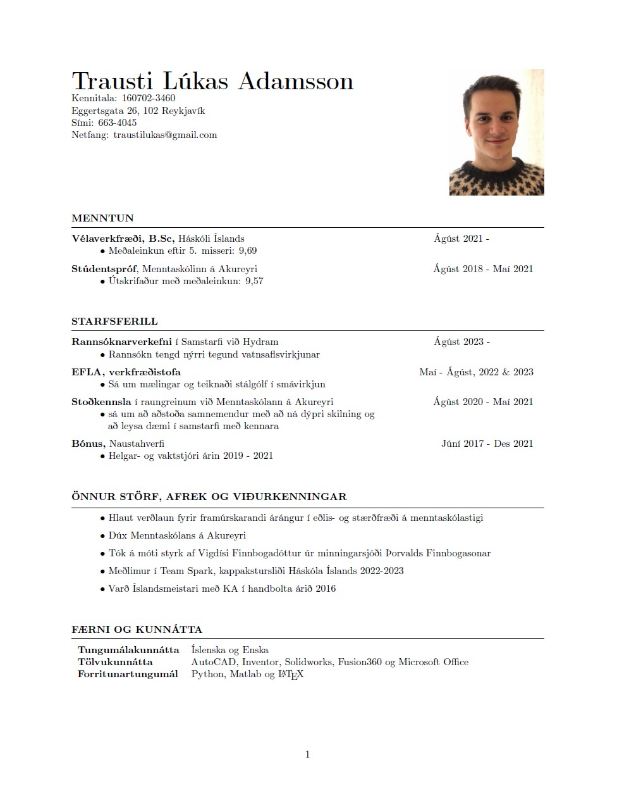

Heimasíða
VÉL608G - Tölvustudd framleiðsla
Verkefni 1 - Vefsíðugerð
Verkefni 2
Verkefni 3
Verkefni 4
Verkefni 5
Lokaverkefni
VÉL205M - Tölvustýrður vélbúnaður
Verkefni 1 - Forritari og ...
Verkefni 2
Verkefni 3
Verkefni 4
Verkefni 5
Lokaverkefni
Ferilskrá
